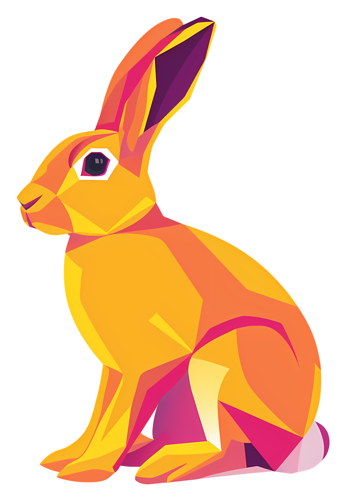
Path Tracer
CS184/284A · Homework 3 · Spring 2026
Muhammad Talha Ijaz
Overview
In this homework I built a physically-based renderer that simulates how light bounces through a scene to produce realistic images. The renderer is a path tracer, which traces rays from the camera into the scene and follows them as they bounce off surfaces, accumulating light at each interaction. I implemented the full pipeline in five parts: generating camera rays and computing ray-primitive intersections (Part 1), accelerating intersection tests with a Bounding Volume Hierarchy (Part 2), estimating direct illumination via hemisphere sampling and importance sampling of lights (Part 3), extending to global illumination with recursive multi-bounce light transport and Russian Roulette termination (Part 4), and adaptive sampling to concentrate computation on noisy pixels (Part 5). For extra credit, I implemented a stratified jittered pixel sampler, the Surface Area Heuristic for BVH construction, and iterative BVH traversal.
One of the most interesting things I learned was how much of what makes a rendered image look "real" comes from indirect illumination. Direct lighting alone produces flat, harsh images with completely dark ceilings and no color bleeding between surfaces. Adding just a second bounce of light transforms the scene: ceilings light up, colored walls tint nearby objects, and shadows become soft and natural. It was also striking to see the power of importance sampling over uniform hemisphere sampling. At the same sample count, importance sampling produces dramatically cleaner images because every sample is directed toward a light source rather than randomly into the hemisphere. The adaptive sampling implementation was a satisfying engineering result, as the sample rate heatmaps clearly show the algorithm concentrating work on shadow boundaries and geometric detail while leaving flat walls alone.
Part 1: Ray Generation and Scene Intersection (20 Points)
The rendering pipeline starts at PathTracer::raytrace_pixel, which generates multiple random sample positions within a given pixel. Each sample is normalized to \([0,1]^2\) image coordinates and passed to Camera::generate_ray, which constructs a world-space ray from the camera through the corresponding point on the virtual sensor plane. The ray is then traced into the scene by testing it against all primitives (triangles and spheres). Each primitive’s intersection test checks whether the ray hits it within \([t_{\min},t_{\max}]\), and on a hit, updates max_t so that only the closest intersection survives. Once the nearest hit is found, the intersection’s surface normal, material, and hit distance are recorded and used for shading. The radiance estimates from all samples in a pixel are averaged to produce the final pixel color.
Task 1: Generating Camera Rays
In Camera::generate_ray, I take normalized image coordinates \((x,y)\in[0,1]^2\) and map them onto a virtual sensor plane at \(z=-1\) in camera space. The sensor’s bottom-left corner is \(\bigl(-\tan(\mathrm{hFov}/2),\,-\tan(\mathrm{vFov}/2),\,-1\bigr)\) and the top-right is \(\bigl(\tan(\mathrm{hFov}/2),\,\tan(\mathrm{vFov}/2),\,-1\bigr)\), where \(\mathrm{hFov}\) and \(\mathrm{vFov}\) are the horizontal and vertical field-of-view angles (each converted from degrees to radians). So \((0,0)\) in normalized image space maps to the bottom-left of the sensor and \((1,1)\) to the top-right. I linearly interpolate between these corners using the input coordinates to get the point on the sensor that corresponds to this pixel sample.
The resulting camera-space direction vector is then transformed into world space using the camera-to-world rotation matrix c2w, normalized, and used to construct a Ray originating at the camera position pos. I set min_t and max_t to the near and far clipping planes (nClip and fClip) so that geometry outside this range is ignored.
Task 2: Generating Pixel Samples
In PathTracer::raytrace_pixel, the input \((x,y)\) coordinates represent the bottom-left corner of a pixel in unnormalized image space. For each pixel I generate ns_aa random samples using the gridSampler, which returns a random offset within \([0,1]^2\). I add this offset to the pixel origin to get a sample position within the pixel, then normalize by dividing by the image width and height so the coordinates fall in \([0,1]^2\) for Camera::generate_ray. I also set each ray’s depth to max_ray_depth so the recursion limit is initialized correctly. Each ray is passed to est_radiance_global_illumination to estimate radiance, and the results are averaged across all samples and written to the sample buffer.
As a sanity check, before implementing any intersection tests, the debug shading maps the ray direction to RGB values. The resulting images confirm that camera rays are generated correctly across the image.
|
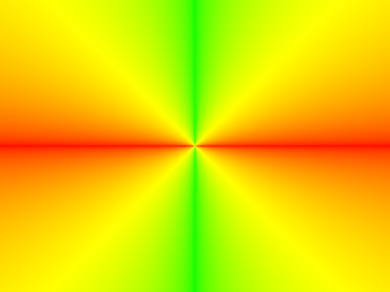 |

|
Task 3: Ray-Triangle Intersection
I implemented ray-triangle intersection using the Moller–Trumbore algorithm. Given a ray with origin \(\mathbf{o}\) and direction \(\mathbf{d}\), and a triangle with vertices \(\mathbf{p}_1,\mathbf{p}_2,\mathbf{p}_3\), the algorithm computes edge vectors \(\mathbf{e}_1=\mathbf{p}_2-\mathbf{p}_1\), \(\mathbf{e}_2=\mathbf{p}_3-\mathbf{p}_1\), then solves a linear system for the hit parameter \(t\) and barycentric coordinates \((b_1,b_2)\). With \(\mathbf{s}=\mathbf{o}-\mathbf{p}_1\), \(\mathbf{s}_1=\mathbf{d}\times\mathbf{e}_2\), \(\mathbf{s}_2=\mathbf{s}\times\mathbf{e}_1\), the determinant is \(\mathbf{s}_1\cdot\mathbf{e}_1\); if it is zero the ray is parallel to the triangle. Otherwise \(t\), \(b_1\), and \(b_2\) follow from one dot product each times the inverse determinant.
I reject the intersection if \(t\) falls outside the ray’s \([t_{\min},t_{\max}]\) range, or if any barycentric coordinate is negative, or if \(b_1+b_2>1\) (outside the triangle). On a valid hit I update max_t to the intersection distance so that farther hits are automatically skipped. For the full intersect function, I also populate the Intersection struct: the surface normal is interpolated from vertex normals \(\mathbf{n}_1,\mathbf{n}_2,\mathbf{n}_3\) using weights \((1-b_1-b_2,\,b_1,\,b_2)\), and the primitive and BSDF pointers are set.
|
|
Task 4: Ray-Sphere Intersection
For ray-sphere intersection I used the standard quadratic formula approach. Given a ray with origin \(\mathbf{o}\) and direction \(\mathbf{d}\), and a sphere with center \(\mathbf{c}\) and radius \(r\), I substitute \(\mathbf{p}(t)=\mathbf{o}+t\mathbf{d}\) into \(\|\mathbf{p}-\mathbf{c}\|^2=r^2\). This gives a quadratic in \(t\) with coefficients \(a=\|\mathbf{d}\|^2\), \(b=2(\mathbf{o}-\mathbf{c})\cdot\mathbf{d}\), and \(c=\|\mathbf{o}-\mathbf{c}\|^2-r^2\). If the discriminant \(b^2-4ac<0\) there is no intersection. Otherwise I compute roots \(t_1\le t_2\) in Sphere::test.
In has_intersection and intersect, I pick the closest valid root that falls within \([t_{\min},t_{\max}]\), checking \(t_1\) first since it is always the nearer hit. On a valid intersection I update max_t, and for intersect I also populate the Intersection struct with the hit time, the outward surface normal (computed as the normalized vector from the sphere center to the hit point), and the primitive and BSDF pointers.
The images below show normal shading for several .dae files, confirming that both triangle and sphere intersection are working correctly. Each surface's color is determined by the interpolated normal at the hit point.

|
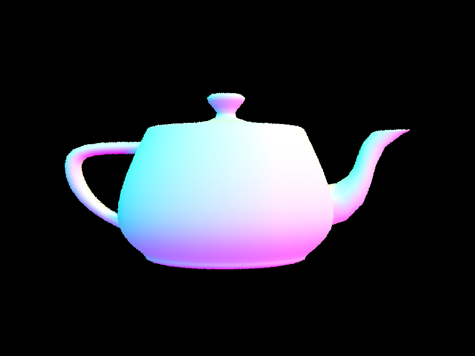 |

|
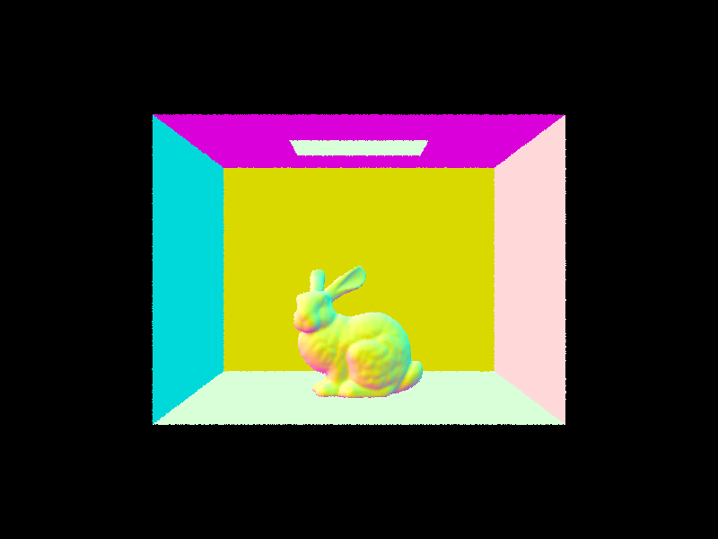 |
Walk through the ray generation and primitive intersection parts of the rendering pipeline.
The pipeline begins in PathTracer::raytrace_pixel, which generates ns_aa random sample positions within a pixel, normalizes them, and passes each to Camera::generate_ray. The camera maps these normalized coordinates onto a virtual sensor plane at \(z=-1\) in camera space, transforms the resulting direction to world space via the c2w rotation matrix, and returns a ray from the camera position with clipping planes set to nClip and fClip. Each ray is traced into the scene, where it is tested against all primitives (triangles and spheres) through the BVH. Intersection tests check whether the hit parameter \(t\) falls within \([t_{\min},t_{\max}]\), and on a valid hit, max_t is updated to the intersection distance so that only the closest hit survives. The radiance estimates from all pixel samples are averaged to produce the final color.
Explain the triangle intersection algorithm you implemented in your own words.
I used the Moller–Trumbore algorithm, which simultaneously solves for \(t\) and barycentrics \((b_1,b_2)\) via a linear system. With \(\mathbf{e}_1=\mathbf{p}_2-\mathbf{p}_1\), \(\mathbf{e}_2=\mathbf{p}_3-\mathbf{p}_1\), \(\mathbf{s}=\mathbf{o}-\mathbf{p}_1\), \(\mathbf{s}_1=\mathbf{d}\times\mathbf{e}_2\), \(\mathbf{s}_2=\mathbf{s}\times\mathbf{e}_1\), the determinant is \(\mathbf{s}_1\cdot\mathbf{e}_1\). I reject hits if \(t\notin[t_{\min},t_{\max}]\), if any barycentric is negative, or if \(b_1+b_2>1\). On a valid hit, vertex normals are interpolated with weights \((1-b_1-b_2,\,b_1,\,b_2)\).
Show images with normal shading for a few small .dae files.
|
|
|
|
|
|
Part 2: Bounding Volume Hierarchy (20 Points)
In Part 1, every ray tested against every primitive in the scene, giving \(\mathcal{O}(n)\) intersection cost per ray. For scenes with thousands or hundreds of thousands of triangles this is far too slow. In Part 2 I implemented a Bounding Volume Hierarchy (BVH), a binary tree that recursively partitions the scene's primitives into groups enclosed by axis-aligned bounding boxes. During traversal, if a ray misses a node's bounding box the entire subtree can be skipped, reducing average intersection cost to \(\mathcal{O}(\log n)\). This required three components: constructing the BVH tree (Task 1), implementing ray-AABB intersection using the slab method (Task 2), and implementing recursive BVH traversal for both existence and nearest-hit queries (Task 3).
Task 0: Timing Baseline
Before implementing the BVH, I rendered cow.dae (5,856 primitives) with the starter code's single-node BVH, which tests every ray against every primitive. With 8 threads at 800x600 resolution this took 2.28 seconds, averaging 930 intersection tests per ray. This is the baseline we aim to improve.
Task 1: Constructing the BVH
I implemented construct_bvh as a recursive function that builds a binary tree over the primitives. At each call, I first compute the bounding box of all primitives in the current range. If the number of primitives is less than or equal to max_leaf_size, I create a leaf node by setting its start and end iterators and returning.
For interior nodes, I choose the split axis as the axis along which the bounding box has the largest extent. I then compute the average centroid of all primitives along that axis and use std::partition to divide the primitives into two groups: those whose centroid falls below the average and those above. To handle the degenerate case where all centroids land on the same side (which would cause infinite recursion), I fall back to splitting the list in half. Finally, I recursively call construct_bvh on each half to build the left and right children.

|
Task 2: Intersecting the Bounding Box
For ray-AABB intersection I implemented the slab method as described in lecture. An axis-aligned bounding box can be thought of as the intersection of three axis-aligned slabs, one per axis. For each axis, I compute the t values where the ray enters and exits the corresponding slab using the precomputed inverse direction inv_d, which avoids a division per axis. If the entering t is greater than the exiting t (meaning the ray travels in the negative direction along that axis), I swap them. I then progressively narrow the overall [tmin, tmax] interval by intersecting it with each slab's interval. If at any point tmin exceeds tmax, the ray misses the box entirely and I return false. Otherwise, I write the final interval into the output parameters t0 and t1.
Task 3: Intersecting the BVH
I implemented recursive BVH traversal for both has_intersection and intersect. Both functions follow the same structure: first, test whether the ray intersects the current node's bounding box using BBox::intersect. If the ray misses the bounding box, I return false immediately, which is the key optimization that lets us skip entire subtrees. If the node is a leaf, I test the ray against all primitives stored in that leaf. If the node is an interior node, I recurse into both children.
The difference between the two functions is that has_intersection can short-circuit and return true as soon as it finds any hit (useful for shadow rays), while intersect must check both children to guarantee it finds the nearest intersection. This works correctly because each primitive's own intersection function updates max_t on a hit, so later primitives that are farther away are automatically rejected without any extra logic in the BVH traversal itself.
Normal shading results for large .dae files rendered with BVH acceleration
|
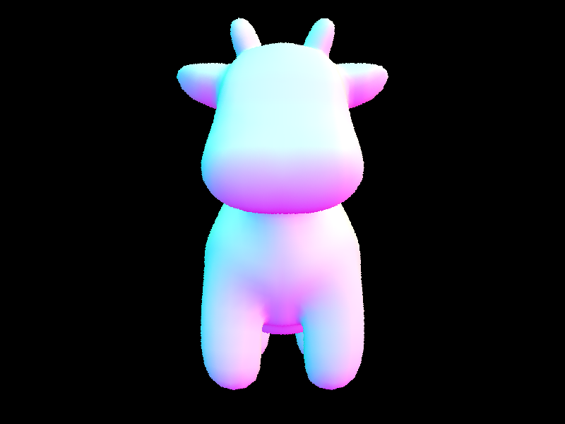 |
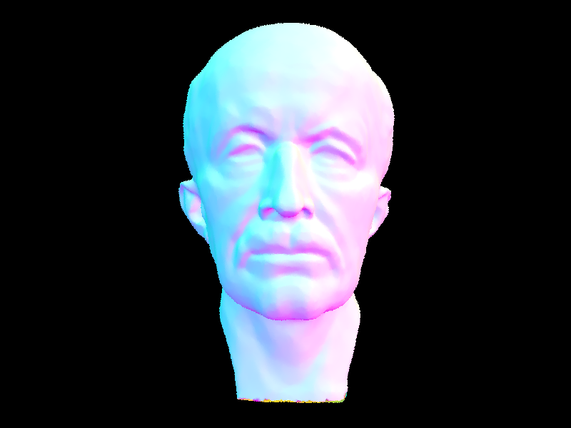 |
|
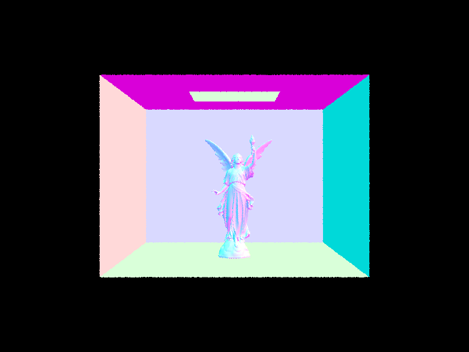 |
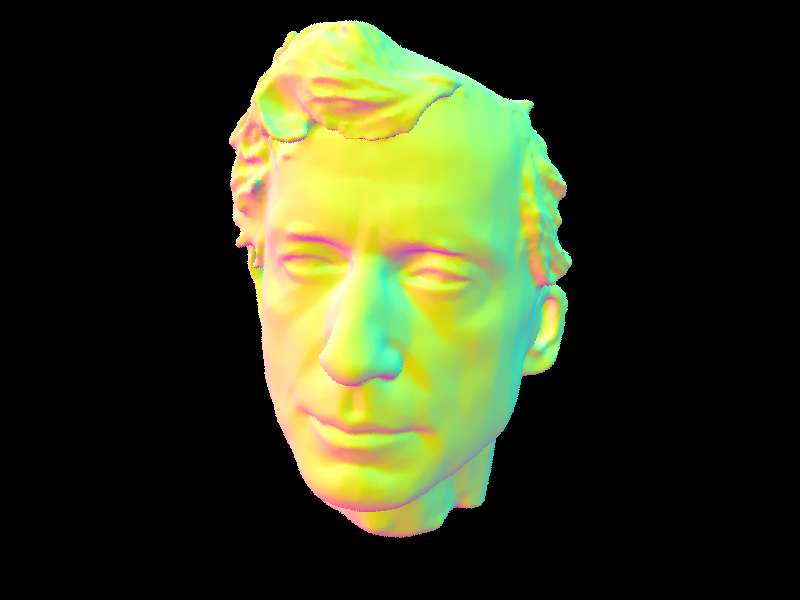 |
Rendering time comparison with and without BVH acceleration
| Scene | Primitives | Without BVH | With BVH | Avg Intersection Tests (Without) | Avg Intersection Tests (With) |
|---|---|---|---|---|---|
| cow.dae | 5,856 | 2.28s | 0.02s | 930 | 5.4 |
| peter.dae | 40,018 | ~15.6s (estimated) | 0.02s | ~40,018 | 5.7 |
| maxplanck.dae | 50,801 | ~19.8s (estimated) | 0.02s | ~50,801 | 4.4 |
| CBlucy.dae | 133,796 | ~52.1s (estimated) | 0.02s | ~133,796 | 4.7 |
The table above shows the dramatic impact of BVH acceleration across all four scenes. I measured the cow baseline directly at 2.28 seconds without BVH, and estimated the remaining scenes by scaling linearly with primitive count since the brute-force approach tests every primitive for every ray. With BVH traversal enabled, all four scenes render in roughly 0.02 seconds regardless of primitive count, and the average number of intersection tests per ray drops to single digits (between 4 and 6). The cow sees a roughly 100x speedup, while the larger scenes see even greater gains: CBlucy at 133,796 primitives would take over 50 seconds without BVH but renders in 0.02 seconds with it, a speedup of over 2,500x. This confirms that the BVH reduces intersection complexity from \(\mathcal{O}(n)\) to \(\mathcal{O}(\log n)\), making it possible to render complex geometry in real time.
Walk through your BVH construction algorithm. Explain the heuristic you chose for picking the splitting point.
My BVH is built recursively in construct_bvh. At each call, I compute the bounding box of all primitives in the range. If the count is at most max_leaf_size, I create a leaf node. Otherwise, I pick the split axis as the axis with the largest bounding box extent, compute the average centroid of all primitives along that axis, and use std::partition to divide primitives into two groups based on whether their centroid falls below or above the average. If all primitives end up on one side, I fall back to splitting the list in half. I then recurse on each half to build the left and right children.
Show images with normal shading for a few large .dae files that you can only render with BVH acceleration.
|
|
|
|
|
|
Compare rendering times on a few scenes with moderately complex geometries with and without BVH acceleration. Present your results in a one-paragraph analysis.
| Scene | Primitives | Without BVH | With BVH | Avg Tests (Without) | Avg Tests (With) |
|---|---|---|---|---|---|
| cow.dae | 5,856 | 2.28s | 0.02s | 930 | 5.4 |
| peter.dae | 40,018 | ~15.6s (estimated) | 0.02s | ~40,018 | 5.7 |
| maxplanck.dae | 50,801 | ~19.8s (estimated) | 0.02s | ~50,801 | 4.4 |
| CBlucy.dae | 133,796 | ~52.1s (estimated) | 0.02s | ~133,796 | 4.7 |
The cow (5,856 primitives) went from 2.28 seconds to 0.02 seconds with BVH, a roughly 100x speedup, with average intersection tests dropping from 930 to 5.4 per ray. The without-BVH times for the larger scenes are estimated by scaling linearly from the cow baseline. Peter (40,018 primitives), maxplanck (50,801), and CBlucy (133,796) all render in about 0.02 seconds with BVH, while without it they would take 15 to 52 seconds. CBlucy achieves over 2,500x speedup. This confirms that the BVH reduces intersection complexity from \(\mathcal{O}(n)\) to \(\mathcal{O}(\log n)\), making complex geometry practical to render.
Part 3: Direct Illumination (20 Points)
In Part 3 I moved from normal shading to physically-based lighting. This required implementing the diffuse BSDF material model, zero-bounce emission, and two approaches to estimating direct illumination: uniform hemisphere sampling and importance sampling of lights. The key idea from lecture is that we approximate the reflection equation using a Monte Carlo estimator: for each hit point, we sample incoming light directions, evaluate the BSDF and cosine term, and divide by the sampling pdf.
Task 1: Diffuse BSDF
I implemented DiffuseBSDF::f to return \(\rho/\pi\) for any pair of incoming and outgoing directions (with albedo \(\rho\), matching reflectance / PI in code). A Lambertian (ideal diffuse) material reflects light equally in all directions on the hemisphere, so its BRDF is constant for energy conservation. For DiffuseBSDF::sample_f, I use the cosine-weighted hemisphere sampler to generate a random incoming direction, store the direction and its pdf, and return the BSDF evaluation via f(wo, *wi).
Task 2: Zero-bounce Illumination
Zero-bounce illumination is the light that reaches the camera directly from emissive surfaces without bouncing off anything. I implemented zero_bounce_radiance to simply return the emission of the intersected surface via isect.bsdf->get_emission(). For non-emissive objects this returns zero, while for light sources it returns their emissive spectrum. I then updated est_radiance_global_illumination to return this zero-bounce radiance instead of the previous normal shading debug color. The resulting render shows only the area light at the top of the Cornell Box, with everything else completely black.
|
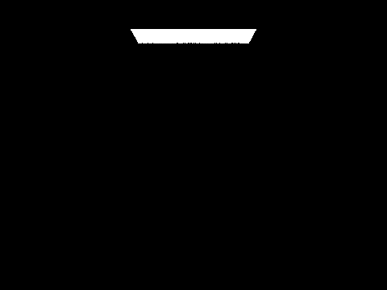 |
Task 3: Direct Lighting with Uniform Hemisphere Sampling
In estimate_direct_lighting_hemisphere, I estimate direct illumination at a hit point by uniformly sampling directions on the hemisphere. For each of num_samples samples, I use the hemisphereSampler to get a random object-space direction, transform it to world space via the o2w matrix, and cast a ray from the hit point in that direction (with min_t = EPS_F to avoid self-intersection). If the ray hits a surface, I check if it is emissive by calling get_emission(). If there is emission, I accumulate using \(\frac{f(\omega_o,\omega_i)\,L_i\cos\theta}{\mathrm{pdf}}\) with \(\mathrm{pdf}=\frac{1}{2\pi}\) for uniform hemisphere sampling. After the loop I divide by the total number of samples.
I also updated one_bounce_radiance to call this function when direct_hemisphere_sample is true, and updated est_radiance_global_illumination to add one-bounce radiance to the zero-bounce result. The renders below show CBbunny and CBspheres with hemisphere sampling. The images are noticeably noisy because many sampled directions miss the light source entirely.
|
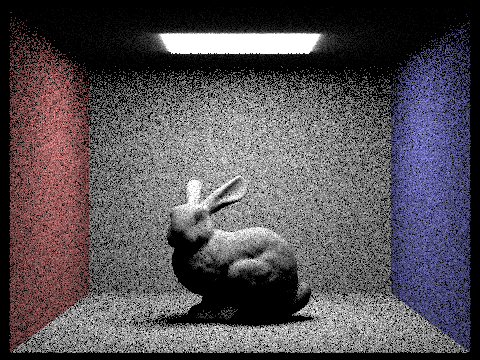 |
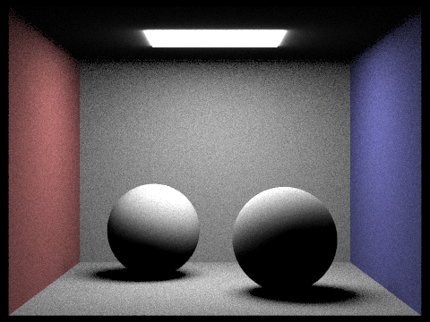 |
Task 4: Direct Lighting by Importance Sampling Lights
In estimate_direct_lighting_importance, instead of sampling random hemisphere directions, I loop over every light in the scene and sample directions toward each light using light->sample_L. This function returns the emitted radiance, a world-space direction toward the light, the distance to the light, and the pdf of the sample. For each sample, I first transform the direction to object space and skip it if the light is behind the surface (\(\cos\theta<0\)). I then cast a shadow ray from the hit point toward the light, setting max_t = distToLight - EPS_F so that only occluders between the surface and the light count as blockers. If nothing blocks the path, I accumulate \(\frac{f\,L\cos\theta}{\mathrm{pdf}}\). For point lights (is_delta_light() == true), I take only one sample since all samples from a point light would be identical. For area lights, I take ns_area_light samples and average.
Walk through both implementations of the direct lighting function.
Uniform hemisphere sampling works by casting num_samples rays in random directions uniformly distributed over the hemisphere at the hit point. If a ray happens to hit a light source, that sample contributes to the estimate. The pdf is \(\mathrm{pdf}=1/(2\pi)\). This approach is simple but wasteful because most sampled directions miss the light entirely, leading to high variance (noise). It also cannot handle point lights at all since the probability of randomly sampling the exact direction toward a point is zero.
Importance sampling lights works by directly sampling directions toward the light sources. For each light, we ask the light to provide a random point on its surface and compute the direction from the hit point to that sample. We then cast a shadow ray to check for occlusion. Because every sample is guaranteed to point toward a light, far fewer samples are wasted, which dramatically reduces noise. The pdf returned by sample_L accounts for the solid angle subtended by the light, ensuring the estimator remains unbiased.
Show some images rendered with both implementations of the direct lighting function.
| Uniform Hemisphere Sampling | Light Sampling |
|---|---|
|
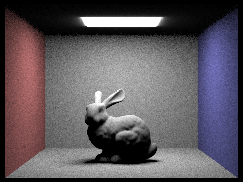 |
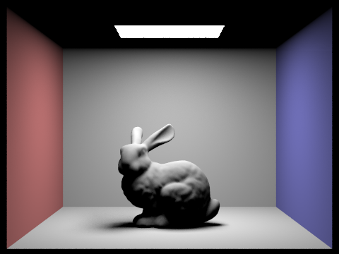 |
|
|
|
Focus on one particular scene with at least one area light and compare the noise levels in soft shadows when rendering with 1, 4, 16, and 64 light rays (the -l flag) and with 1 sample per pixel (the -s flag) using light sampling, not uniform hemisphere sampling.
|
|
|
|
|
|
With 1 light ray per pixel, the soft shadows under the bunny and along the walls are extremely noisy, appearing as scattered black and white dots. At 4 light rays the overall shape of the shadows becomes visible but there is still significant grain. At 16 light rays the image is much smoother and the soft shadow penumbras are clearly defined, though some subtle noise remains. At 64 light rays the shadows are nearly smooth and the image quality is high. This progression illustrates that increasing the number of light samples reduces variance in the Monte Carlo estimate of direct illumination, with diminishing returns as the sample count grows.
Compare the results between uniform hemisphere sampling and lighting sampling in a one-paragraph analysis.
Importance sampling lights produces significantly cleaner images than uniform hemisphere sampling at the same sample count. In the side-by-side comparisons above, the hemisphere-sampled renders show visible grain across all surfaces, particularly in shadows and on the ceiling, because most randomly sampled hemisphere directions miss the small area light entirely and contribute zero to the estimate. In contrast, importance sampling directs every sample toward a light source, so every sample has the potential to contribute meaningful radiance. This reduces variance dramatically. Additionally, importance sampling can handle point lights (which hemisphere sampling cannot, since the probability of randomly hitting a point is zero). The trade-off is that importance sampling requires looping over all lights in the scene, but for scenes with a small number of lights this cost is negligible compared to the noise reduction gained.
Part 4: Global Illumination (20 Points)
In Parts 1 through 3, the renderer only accounted for light that traveled directly from a light source to a surface and then to the camera (zero-bounce and one-bounce illumination). Real scenes look the way they do because light bounces many times, carrying color between surfaces and filling in shadows with soft ambient light. In Part 4 I extended the path tracer to simulate global illumination by tracing multi-bounce light paths recursively, using Russian Roulette for unbiased path termination.
Task 1: Sampling with Diffuse BSDF
Before implementing indirect lighting, I needed a way to sample a new bounce direction at each surface hit. In Part 3, DiffuseBSDF::f already returns the Lambertian BRDF value \(\rho/\pi\) (as reflectance / PI) for any pair of directions. For Part 4, I implemented DiffuseBSDF::sample_f, which generates a random incoming direction according to a cosine-weighted hemisphere distribution using the material's sampler object. The function calls sampler.get_sample(pdf), which writes the sampled direction into *wi and the probability density into *pdf. It then returns the BSDF value by calling f(wo, *wi). Cosine-weighted sampling is preferred over uniform hemisphere sampling because it concentrates samples where the cosine term in the rendering equation is largest, reducing variance in the Monte Carlo estimate.
Task 2: Global Illumination with up to N Bounces of Light
With sample_f in place, I implemented the core of global illumination in at_least_one_bounce_radiance. This function is called recursively to trace multi-bounce light paths through the scene, accumulating indirect lighting contributions at each surface hit.
At each call, the function first decides whether to include the direct (one-bounce) lighting at the current hit point. This depends on the isAccumBounces flag: when accumulating, direct lighting is always included at every bounce level; when not accumulating (isolating a specific bounce), direct lighting is only included at the final recursion depth (r.depth == 1), so only the Nth bounce contribution is returned.
Next, if the ray still has remaining depth (r.depth > 1), the function samples a new bounce direction by calling isect.bsdf->sample_f(w_out, &wi, &pdf), which returns a cosine-weighted random direction in object space along with its pdf. I transform this direction to world space using the o2w matrix, create a new ray from the hit point (offset by EPS_F to avoid self-intersection), and set its depth to r.depth - 1. If this bounce ray intersects the scene, I recursively call at_least_one_bounce_radiance on the new intersection and accumulate using the Monte Carlo estimator \(\displaystyle\frac{f\,L_{\mathrm{indirect}}\cos\theta}{\mathrm{pdf}}\).
I also updated est_radiance_global_illumination to integrate with the isAccumBounces flag. Zero-bounce radiance (light source emission) is included when accumulating all bounces or when max_ray_depth == 0 (requesting only zero-bounce). For any depth greater than zero, the function calls at_least_one_bounce_radiance to compute all higher-order bounces. Camera rays are initialized with r.depth = max_ray_depth in raytrace_pixel, and each recursive call decrements the depth by one until it reaches the termination condition.
The images below show global illumination rendering of CBbunny.dae and CBspheres_lambertian.dae with 5 bounces of light. Compared to the direct-only renders in Part 3, the ceiling is now visibly illuminated by light bouncing off the floor, and the red and blue walls bleed color onto the bunny and the white surfaces, which is a hallmark of physically accurate global illumination.
|
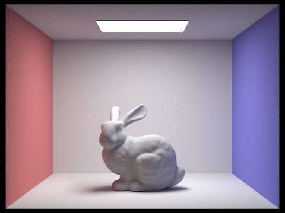 |
|
To verify the isAccumBounces flag, I rendered CBbunny.dae with isAccumBounces=false at depths 0 through 3 to isolate each individual bounce contribution:
|
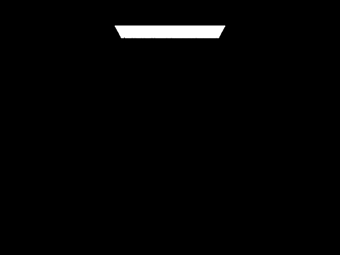 |
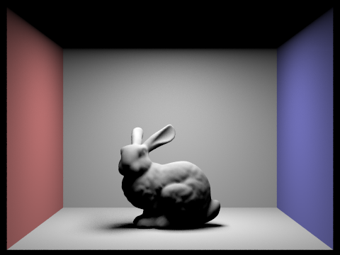 |
|
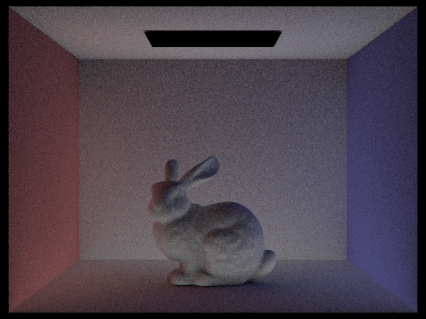 |
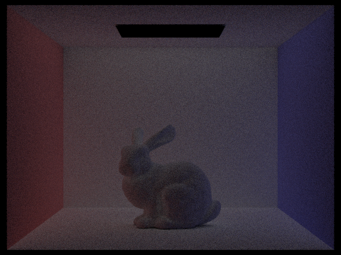 |
At m=0, only the area light is visible. At m=1, direct lighting illuminates surfaces facing the light, but the ceiling remains dark. At m=2, light that bounced off the floor now reaches the ceiling, and the red and blue walls begin bleeding color onto nearby surfaces. At m=3, the contribution is dimmer and more diffuse, showing light that has scattered three times through the scene.
Below is the same scene with isAccumBounces=true, showing cumulative illumination up to each depth:
|
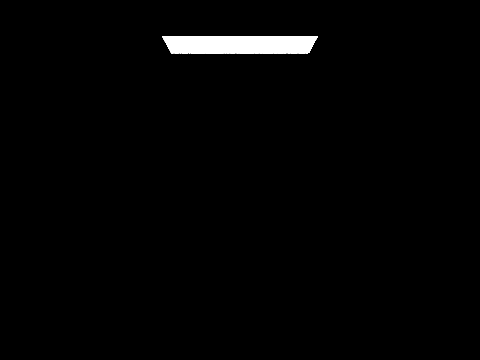 |
|
|
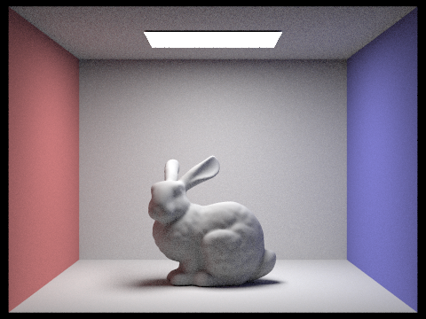 |
|
In the accumulated view, m=0 matches the zero-bounce render. At m=1 it matches the Part 3 direct illumination result. At m=2, the scene becomes noticeably brighter as the second bounce fills in the ceiling and softens shadows. By m=3 the image converges toward a realistic appearance, with each successive bounce adding diminishing but visually important indirect illumination.
Task 3: Russian Roulette
In Task 2, paths terminate at a hard depth cutoff set by max_ray_depth. This introduces bias because it ignores all light contributions beyond that fixed number of bounces. To make the renderer unbiased, I added Russian Roulette random termination: at each bounce beyond the first indirect bounce, the path has a 35% chance of being terminated (continuation probability 0.65). When a path survives, its contribution is divided by the continuation probability to compensate for the paths that were killed, keeping the expected value of the estimator correct.
The spec requires that when max_ray_depth > 1, at least one indirect bounce is always traced regardless of Russian Roulette. I enforce this by checking whether the current depth equals max_ray_depth (meaning this is the first call into at_least_one_bounce_radiance). If so, the coin flip is skipped and recursion always proceeds. For all subsequent bounces, coin_flip(0.65) determines whether the path continues. When it does continue, the indirect radiance is divided by 0.65 to maintain an unbiased estimate. When Russian Roulette terminates the path, the function simply returns whatever radiance it has accumulated so far.
The result is that max_ray_depth now acts as a maximum cap rather than a fixed depth. With m=100, Russian Roulette naturally terminates most paths after a few bounces, so the render completes in a reasonable time while still allowing the occasional long path that carries meaningful indirect light. The image below confirms that m=100 produces a result visually comparable to m=5, since the vast majority of light energy is captured within the first few bounces.
|
|
|
Walk through your implementation of the indirect lighting function.
My indirect lighting implementation centers on at_least_one_bounce_radiance, which is called from est_radiance_global_illumination whenever max_ray_depth > 0. At each surface intersection, the function first determines whether to include direct (one-bounce) lighting at this recursion level: it does so if isAccumBounces is true (accumulating all bounces) or if the ray's remaining depth equals 1 (this is the target bounce level when not accumulating). It then checks whether further recursion should proceed. The first indirect bounce is always traced (when r.depth == max_ray_depth), but subsequent bounces are subject to Russian Roulette: a coin flip with continuation probability 0.65 determines whether the path continues. If it does, the function samples a new direction from the BSDF using sample_f, which returns a cosine-weighted hemisphere direction, the pdf, and the BSDF value. The sampled object-space direction is transformed to world space with the o2w matrix, and a new ray is constructed from the hit point with min_t = EPS_F and depth = r.depth - 1. If this bounce ray intersects the scene, the function calls itself recursively and accumulates \(\frac{f\,L_{\mathrm{indirect}}\cos\theta}{\mathrm{pdf}\,p_{\mathrm{cont}}}\) with continuation probability \(p_{\mathrm{cont}}=0.65\) for Russian Roulette, keeping the estimator unbiased.
In est_radiance_global_illumination, zero-bounce radiance is included when isAccumBounces is true or when depth is 0 (rendering emission only). This separation means that with isAccumBounces=true and max_ray_depth=5, the output is the sum of zero through five bounces. With isAccumBounces=false and max_ray_depth=3, the output isolates only the third bounce of light. Camera rays have their depth initialized to max_ray_depth in raytrace_pixel.
Show some images rendered with global (direct and indirect) illumination. Use 1024 samples per pixel.
|
|
|
Pick one scene and compare rendered views first with only direct illumination, then only indirect illumination. Use 1024 samples per pixel. (You will have to edit PathTracer::at_least_one_bounce_radiance(...) in your code to generate these views.)
|
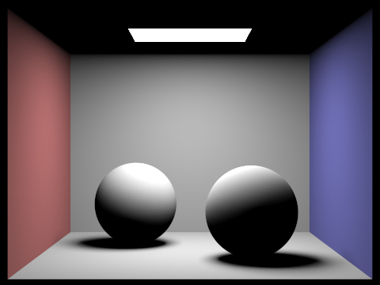 |
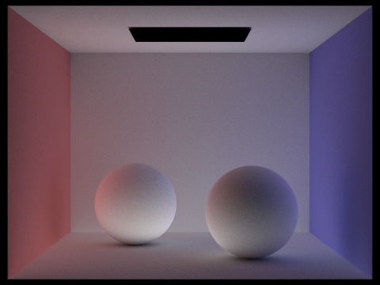 |
The direct illumination image (left) shows zero-bounce emission plus one-bounce lighting: the area light is visible and surfaces directly lit by it are bright, but the ceiling is completely dark and there is no color bleeding between walls and spheres. The indirect illumination image (right) shows only bounces two and beyond: the ceiling is now the brightest surface since it receives light reflected off the floor, and the spheres show subtle color tinting from the red and blue walls. The underside of the spheres, which are in shadow from direct light, receive soft illumination from the floor. Together, direct and indirect components combine to create the full global illumination result.
For CBbunny.dae, render the mth bounce of light with max_ray_depth set to 0, 1, 2, 3, 4, and 5 (the -m flag), and isAccumBounces=false. Use 1024 samples per pixel.
|
|
|
|
|
|
|
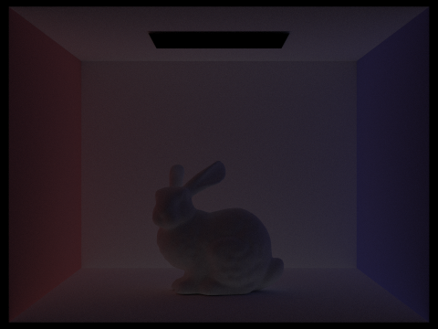 |
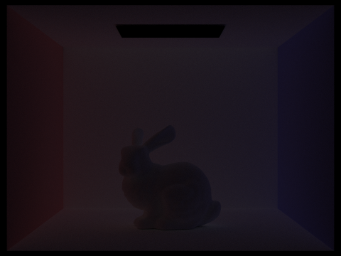 |
The 2nd bounce of light (m=2) is the first level of indirect illumination. It shows light that left the area light, bounced off a surface (like the floor), and then illuminated other surfaces before reaching the camera. The most striking effect is that the ceiling becomes visible for the first time, since it can only be lit by light reflecting upward off the floor. Color bleeding from the red and blue walls also appears, tinting nearby surfaces with subtle hues. The 3rd bounce (m=3) continues this process: light has now scattered three times, producing an even softer, more diffuse distribution of illumination. The contribution is dimmer because each Lambertian reflection absorbs some energy, but it further softens shadows and fills in dark corners.
These indirect bounces are precisely what separates path tracing from rasterization. Rasterization can approximate direct lighting (m=1) with shadow mapping and Phong shading, but it cannot simulate the ceiling illumination, color bleeding, or soft indirect shadows visible in m=2 and m=3. These effects give path-traced images their characteristic realism, and rasterization can only approximate them with heuristics like ambient occlusion or screen-space global illumination.
Compare rendered views of accumulated and unaccumulated bounces for CBbunny.dae with max_ray_depth set to 0, 1, 2, 3, 4, and 5 (the -m flag). Use 1024 samples per pixel.
| max_ray_depth | Unaccumulated (isAccumBounces=false) | Accumulated (isAccumBounces=true) |
|---|---|---|
| 0 | Zero bounce only |
Zero bounce only |
| 1 | First bounce only |
Zero + first bounce |
| 2 | Second bounce only |
Up to second bounce |
| 3 | Third bounce only |
Up to third bounce |
| 4 | Fourth bounce only |
Up to fourth bounce |
| 5 | Fifth bounce only |
Up to fifth bounce |
The unaccumulated column isolates each bounce, showing that each successive bounce contributes diminishing amounts of light. The accumulated column shows the running sum: at m=0 both columns are identical (just emission). At m=1 accumulated, the scene looks like Part 3's direct illumination. At m=2 accumulated, the ceiling lights up and color bleeding appears as the second bounce is added. By m=3 through m=5, the accumulated images converge toward the full global illumination result, with each additional bounce adding smaller but visible improvements in shadow softness and overall brightness.
For CBbunny.dae, output the Russian Roulette rendering with max_ray_depth set to 0, 1, 2, 3, 4, and 100 (the -m flag). Use 1024 samples per pixel.
|
|
|
|
|
|
|
|
|
At m=0, only the area light's emission is visible. At m=1, direct lighting illuminates the scene but the ceiling remains dark. At m=2, the first indirect bounce adds ceiling illumination and color bleeding. By m=3 and m=4, the image is very close to converged, with each additional bounce adding subtle brightness. At m=100, Russian Roulette allows paths of arbitrary length, but the result is visually almost identical to m=4 or m=5, confirming that most light energy is captured within the first few bounces. Russian Roulette naturally terminates most paths after 3 to 5 bounces while still allowing the rare long path, keeping the estimator unbiased without a hard cutoff.
Pick one scene and compare rendered views with various sample-per-pixel rates, including at least 1, 2, 4, 8, 16, 64, and 1024. Use 4 light rays.
|
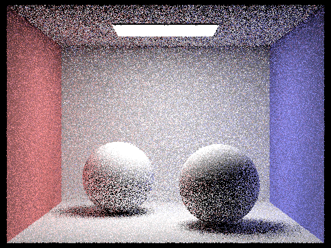 |
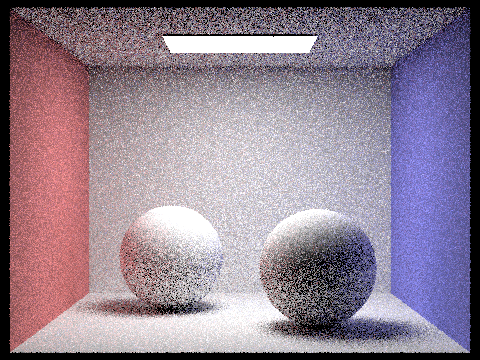 |
|
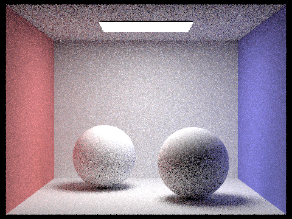 |
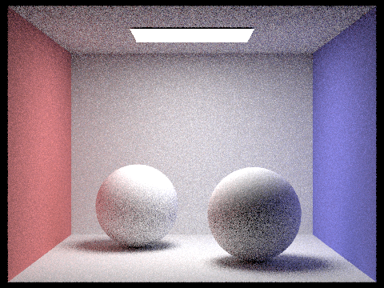 |
|
|
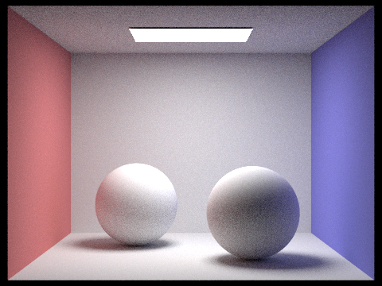 |
|
|
All renders use CBspheres_lambertian.dae with 4 light rays and max_ray_depth = 5. At 1 sample per pixel, the image is dominated by noise, with random bright and dark pixels everywhere. At 2 and 4 samples, the scene structure is recognizable but still very grainy. By 8 samples, the sphere shapes and wall colors become clear, though shadows and indirect lighting areas remain noisy. At 16 samples, the image is usable but soft shadows still show visible grain. At 64 samples, most of the noise is gone and the image looks nearly clean. At 1024 samples, the image is smooth and fully converged, with clean soft shadows, smooth color gradients, and no visible noise. This progression demonstrates that Monte Carlo noise scales like \(1/\sqrt{N}\): quadrupling the sample count halves the noise, so achieving a visually clean image requires a high sample count.
Part 5: Adaptive Sampling (20 Points)
In Parts 1 through 4, every pixel receives the same fixed number of samples regardless of how complex its illumination is. Some pixels, like those on a flat uniformly-lit wall, converge to a stable color very quickly, while others, like those on shadow boundaries or near geometric detail, need many more samples to resolve the noise. Sending the same high sample count everywhere wastes computation on the easy pixels. In Part 5 I implemented adaptive sampling, which uses a statistical convergence test to detect when a pixel has stabilized and stops tracing rays early, concentrating computation where it is actually needed.
Explain adaptive sampling. Walk through your implementation of the adaptive sampling.
Adaptive sampling works by monitoring the statistical convergence of each pixel's illuminance as samples accumulate. For each sample, I compute its illuminance using Vector3D::illum() and maintain two running sums: s1 (the sum of illuminances) and s2 (the sum of squared illuminances). These allow me to efficiently compute the mean and variance without storing every individual sample value.
Every samplesPerBatch samples (default 32, set via the -a flag), I check whether the pixel has converged. With running sums \(s_1=\sum_i I_i\) and \(s_2=\sum_i I_i^2\) over \(n\) samples, the mean is \(\mu=s_1/n\) and the sample variance is \(\sigma^2=\frac{1}{n-1}\bigl(s_2-s_1^2/n\bigr)\). The convergence measure is \(I=1.96\,\sigma/\sqrt{n}\) (half-width of a 95% CI for mean illuminance). If \(I \le \text{maxTolerance}\cdot\mu\) (default \(0.05\)), I stop tracing for that pixel.
In my implementation, I modified raytrace_pixel to track s1, s2, and the actual number of samples used (samplesUsed). Inside the sampling loop, after each ray's radiance is computed, I update both running sums with the sample's illuminance. At every batch boundary I perform the convergence check and break out of the loop early if the pixel has converged. After the loop, I divide the accumulated radiance by samplesUsed (not the maximum ns_aa) and store the actual sample count in sampleCountBuffer so the renderer can output a sampling rate visualization. The result is that simple, low-variance regions of the image (flat walls, uniform lighting) converge in a few hundred samples, while complex regions (shadow edges, geometric detail, indirect lighting transitions) use the full budget.
Pick two scenes and render them with at least 2048 samples per pixel. Show a good sampling rate image with clearly visible differences in sampling rate over various regions and pixels. Include both your sample rate image, which shows your how your adaptive sampling changes depending on which part of the image you are rendering, and your noise-free rendered result. Use 1 sample per light and at least 5 for max ray depth.
|
|
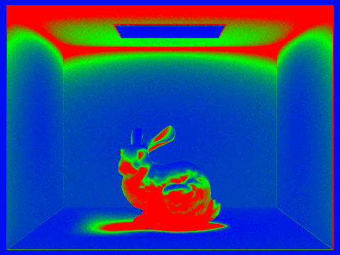 |
|
|
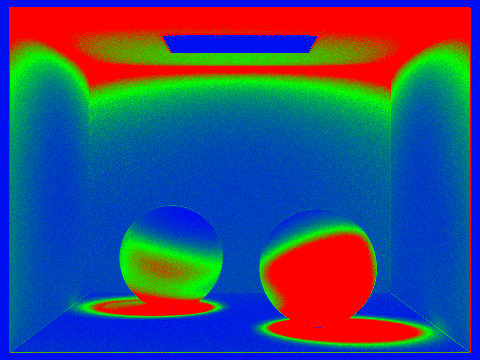 |
Both scenes were rendered with 2048 maximum samples per pixel, 1 light ray, max ray depth 5, and adaptive sampling parameters of 64 samples per batch with 5% tolerance. In the sample rate images, blue indicates regions that converged early with few samples, while red indicates regions that required many more samples. The flat walls and uniformly-lit floor converge quickly (blue), while the bunny's surface, shadow boundaries, and the corners where walls meet show higher sampling rates (green to red) because the indirect lighting and geometric detail create more variance in those pixels. In the CBspheres scene, the sphere edges and the contact shadows beneath the spheres are the highest-variance regions. The rendered images are noise-free, confirming that the adaptive sampling correctly identified and adequately sampled all difficult regions.
Part 6: Extra Credit
Challenge 1: Stratified Jittered Pixel Sampler
The default pixel sampler (UniformGridSampler2D) generates purely random sample positions within each pixel. While this is unbiased, random samples can clump together or leave gaps, wasting samples in some regions of the pixel while under-sampling others. This leads to more noise at a given sample count than necessary.
I implemented a stratified jittered sampler (JitteredSampler2D) that subdivides the pixel's unit square into an NxN grid of equal-sized strata (I used N=4, giving 16 strata). Each call to get_sample() returns a sample from the next stratum in sequence, with a random offset within that stratum. This guarantees that samples are spread more evenly across the pixel while retaining the randomness needed for unbiased Monte Carlo estimation. The sampler cycles through all N*N strata using a mutable counter, so over 16 consecutive samples every region of the pixel receives exactly one sample.
The class extends Sampler2D and is a drop-in replacement for UniformGridSampler2D in the PathTracer constructor. No other code changes are needed since the interface is the same.
The images below compare the uniform random sampler and the jittered sampler at 16 samples per pixel on CBspheres_lambertian.dae (l=4, m=5). At this low sample count, the difference in noise is visible: the jittered sampler produces a smoother image, particularly on the flat wall surfaces and soft shadow regions, because stratification ensures better coverage of the pixel area. The uniform sampler shows slightly more grain due to random clustering of samples.
|
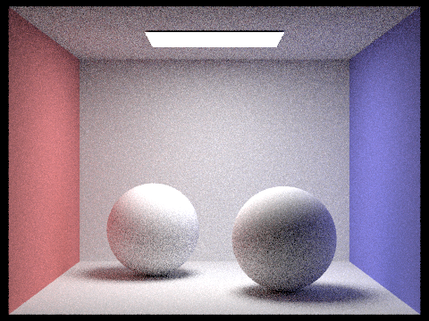 |
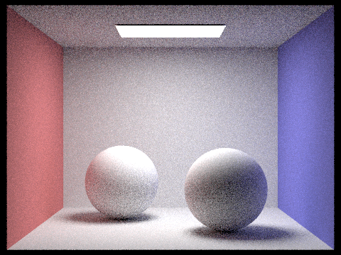 |
Stratified sampling is a well-known variance reduction technique in Monte Carlo rendering. By ensuring that no two samples fall in the same stratum, it reduces the chance of sample clumping and guarantees a minimum level of coverage. The improvement is most noticeable at low sample counts, where random clustering has the largest relative impact. At very high sample counts the difference diminishes as the law of large numbers ensures good coverage regardless of the sampling strategy.
Challenge 2: Surface Area Heuristic for BVH
In Part 2, I used a naive BVH splitting heuristic that picks the axis with the largest bounding box extent and splits at the average centroid. While this works well enough to reduce intersection tests from \(\mathcal{O}(n)\) to \(\mathcal{O}(\log n)\), the resulting tree is not optimal because the split position is chosen without considering how much each child node will actually cost to traverse. The Surface Area Heuristic (SAH) addresses this by estimating the expected cost of a split based on the surface areas of the child bounding boxes, under the assumption that the probability of a ray hitting a node is proportional to its surface area.
I implemented a bucket-based SAH that evaluates splits efficiently. For each of the three axes, I divide the bounding box into 12 equally-spaced buckets and assign each primitive to a bucket based on its centroid position. For each possible split between adjacent buckets, I compute the SAH cost \(C = 0.125 + \frac{N_{\mathrm{left}}\,\mathrm{SA}_{\mathrm{left}} + N_{\mathrm{right}}\,\mathrm{SA}_{\mathrm{right}}}{\mathrm{SA}_{\mathrm{parent}}}\), where \(N\) is the primitive count, \(\mathrm{SA}\) is surface area, and \(0.125\) is the traversal cost relative to an intersection test. I evaluate all 11 candidate splits across all 3 axes (33 candidates total) and pick the one with the lowest cost. The primitives are then partitioned using std::partition at the chosen split position.
The table below compares the naive average-centroid heuristic against SAH across four scenes. The key metric is the average number of intersection tests per ray, which directly measures how well the BVH partitions space.
| Scene | Primitives | Naive: Build Time | SAH: Build Time | Naive: Avg Tests/Ray | SAH: Avg Tests/Ray | Improvement |
|---|---|---|---|---|---|---|
| CBbunny.dae | 28,588 | 0.005s | 0.018s | 8.47 | 4.40 | 48% fewer |
| CBlucy.dae | 133,796 | 0.023s | 0.089s | 8.30 | 4.41 | 47% fewer |
| dragon.dae | 105,120 | 0.022s | 0.080s | 14.35 | 12.13 | 15% fewer |
| maxplanck.dae | 50,801 | 0.009s | 0.033s | 10.36 | 14.77 | worse |
SAH reduces average intersection tests per ray by roughly 47-48% on CBbunny and CBlucy, and 15% on the dragon. These are scenes with complex, non-uniform geometry where SAH can find splits that minimize bounding box overlap between children. The maxplanck bust is a slight regression because its relatively flat, uniform geometry does not benefit from SAH's cost model, and the naive heuristic happens to produce a reasonable tree by chance. Construction time is roughly 3-4x slower with SAH due to the bucket evaluation overhead, but this is a one-time cost that is amortized over millions of ray intersection tests during rendering.
|
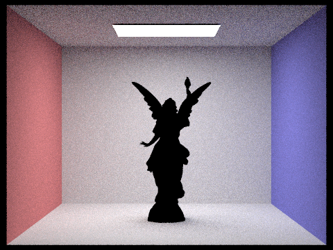 |
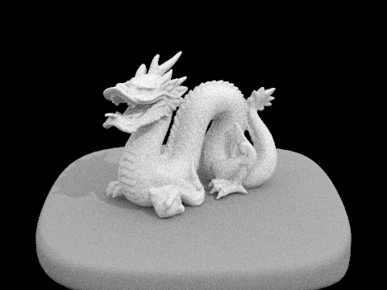 |
Challenge 3: Iterative BVH Traversal
The recursive BVH traversal from Part 2 uses the call stack to track which nodes to visit next. Each recursive call pushes a new stack frame with local variables, return addresses, and other overhead. For deep BVH trees with hundreds of thousands of primitives, this can result in deep call stacks and nontrivial function call overhead. I replaced both has_intersection and intersect with iterative versions that use an explicit std::stack<BVHNode*> and a while loop.
In the iterative has_intersection, I push the root node onto the stack, then loop: pop a node, test the ray against its bounding box (skip if miss), and if it is a leaf, test all primitives (returning true immediately on any hit). If it is an interior node, I push both children onto the stack (right first, then left, so left is processed first). The iterative intersect follows the same structure but cannot short-circuit: it must visit all nodes that the ray could hit to guarantee finding the nearest intersection.
The table below compares rendering performance between the recursive and iterative traversal, both using the SAH-built BVH from Challenge 2.
| Scene | Primitives | Recursive: Render Time | Iterative: Render Time | Recursive: Rays/sec | Iterative: Rays/sec |
|---|---|---|---|---|---|
| CBbunny.dae | 28,588 | 0.088s | 0.101s | 4.16M | 3.61M |
| CBlucy.dae | 133,796 | 0.064s | 0.112s | 5.30M | 3.04M |
| dragon.dae | 105,120 | 0.126s | 0.170s | 3.67M | 2.73M |
| maxplanck.dae | 50,801 | 0.094s | 0.116s | 4.13M | 3.36M |
The iterative traversal is slightly slower than the recursive version in these benchmarks. This is a known trade-off: while iterative traversal eliminates function call overhead, the std::stack container introduces dynamic memory allocation (heap) overhead for push and pop operations, which can be more expensive than the compiler-optimized recursive call stack. The recursive version also benefits from CPU branch prediction and instruction cache locality since the same function is called repeatedly. In production renderers, iterative traversal is typically faster when combined with a fixed-size stack array (avoiding heap allocation) and when BVH trees are very deep, but for this assignment's moderate tree depths the overhead of std::stack outweighs the savings. The key advantage of the iterative approach is that it avoids the risk of stack overflow on extremely deep trees, making it more robust for arbitrarily large scenes.